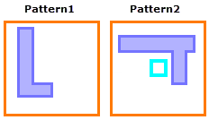
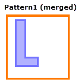
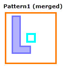
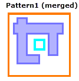

pdl_lib_mgr [‑turbo [number_of_processors]]
merge input filename [input filename]… output filename
[precision value] [compile_output filename [maxjog value]]
[log_file logfilename] [ignore_layer_extents] [ignore_regions]
[gen_all_markers] [ignore_markers | merge_markers]
[conflict_prefix prefix_string]
[index index_prop_name [incr_max | first_available]]
An optional argument set that specifies to use multithreaded parallel processing. The argument set must be specified as shown in the syntax line, before the merge argument.
The optional value number_of_processors is a positive integer that specifies the number of CPUs to use for multithreaded processing.If number_of_processors is not specified, Calibre runs on the maximum number of CPUs available for which you have licenses. For best performance, it is recommended that you avoid specifying this value.
A required argument set that specifies the input PMDB file. Multiple input libraries can be specified.
A required argument that specifies the filename of the merged output PMDB.
An optional argument whose integer value is the number of points per database unit as defined within the pattern library. The default value if not specified is 1000. When merging libraries, it is recommended to use the lowest common multiple of precision values of all of the input libraries to ensure that information is not lost.
If the precision setting causes pattern geometries to be truncated, a warning is issued and the pattern is not included in the output library.
An optional argument that automatically runs the compilation step on the post-merge output PMDB file. This automatically creates the DMACRO file used by the pattern matching tool.
For more information on the DMACRO file, see “DMACRO and CMACRO for Pattern Matching”.
An optional argument that is only used with compile_output. This option sets the jog tolerance feature, which instructs the tool to ignore jogs equal to or less than the specified value. The maximum value for maxjog is two times the global constraint (2*cglobal). The value is specified in microns.
For information on global constraints, see “Global Constraints”.
If a library being merged has a maxjog value, it is ignored (dropped) and a warning is issued. The maxjog value for the merged output library is determined by the maxjog argument.
The maxjog argument should only be used when all patterns contain the same cglobal value. However, if patterns in the output library have differing cglobal values, the maxjog must be less than twice the minimum cglobal value for all patterns in the output library.
An optional argument that specifies to write out a log file with name logfilename. The file logs whether secondary patterns of geometrically identical patterns are removed or not and includes notes on the analysis.
An optional argument that specifies to ignore per layer extent differences while comparing patterns. The global pattern extent is always compared and is unaffected by this argument. Patterns that only differ in per layer extents are considered duplicate and only the first such pattern is saved to the output library.
An optional argument that specifies to ignore region differences while comparing patterns. Patterns that differ only in their regions are considered duplicate and only the first such pattern is saved to the output library.
An optional argument that specifies to remove duplicate patterns that differ only in their markers. The output pattern includes a superset of all unique markers.
Unique markers are defined as having both different names and different types or geometries. Identical markers have both the same name and same type or geometry. Markers that are not unique or identical have the same name but different types or geometries. The secondary pattern is only removed if all markers are unique or identical for the duplicate patterns. If this condition is not met, the secondary pattern is not removed—the differing patterns are saved as separate patterns to the output library.
The gen_all_markers argument may be specified with ignore_markers or merge_markers. See “Marker Considerations” and the “Example 2”.
An optional argument choice that specifies behavior for marker handling.
ignore_markers — Specifies to ignore markers while comparing patterns. Patterns that differ only in their markers are considered duplicate and only the first such pattern is saved to the output library.
merge_markers — Specifies to remove duplicate patterns that differ only in the custom marker geometries and to merge the geometries for the custom markers.
To qualify, the patterns must have identical markers for the non-custom markers and the custom markers must have identical names. The custom marker geometries are merged with an OR function, combining the geometries. Only custom type markers are merged; computed type markers (bbox, drawn, matched, etc.) do not merge.
Figure 1 shows how two different custom markers are merged. Pattern1 in LibraryA and LibraryB differ only in the custom marker A.
See “Marker Considerations” and the “Example 2”.
An optional argument set that specifies to prefix the pattern name with “prefix_string_” in order to resolve naming conflicts when unique patterns in different libraries have the same name. The default behavior is to prefix the pattern name with the library name. See “Resolving Pattern Name Conflicts” for complete details.
An optional argument set that specifies how to handle the property index_prop_name in the merged output library.
If the property index_prop_name does not exist in any input library, it is added to the merged library with sequential values starting at 1 for the first pattern. The property type is double.
If index_prop_name exists in any input library, the following rules control the property in the merged library:
If the property type is not the same in all input libraries, the property is saved as type double in the merged library. (This differs from the behavior without the index argument, in which property types must match.)
If duplicate patterns have conflicting values for index_prop_name, the value in the first found duplicate pattern is used. (This differs from the behavior without the index argument, in which the minimum property value is used.)
If there is no assigned property value for a unique pattern or a set of duplicate patterns, the value in the merged library is assigned as follows, depending on the choice of incr_max or first_available:
incr_max — Assign sequential values starting with the largest value of index_prop_name and incrementing by 1. If the largest value is a floating point number, it is truncated before incrementing. This is the default when “index index_prop_name” is specified.
first_available — Assign the first integer index value that is not assigned to another pattern.
See “Property Handling During Merging” for a discussion of the default behavior and examples of both the default behavior and the behavior with the index argument.
This utility merges one or more input PMDB libraries into a single PMDB library by removing duplicate patterns. By default, patterns are considered duplicate if the pattern shapes, layer extents, regions, Don’t Care pattern layers, and markers are identical. If all pattern orientations are allowed, patterns that differ only in orientation are considered duplicate and are removed. Some options cause certain pattern differences to be ignored, and this changes the definition of a duplicate pattern.
If patterns have Don’t Care pattern layers, the patterns must have Don’t Care layers at the same layer index in order for the patterns to be considered duplicates. The geometries on the Don’t Care layers are not compared. If pattern shapes, layer extents, regions, Don’t Care layers, and markers are identical between patterns, the first pattern is saved to the merged library.
Only exact patterns are evaluated for duplicate removal, meaning any pattern with constraints (with the exception of cglobal) is passed directly to the output library.
Pattern precedence is determined by the order of patterns in the library and the order of input libraries on the command line. When duplicate patterns are found, the first pattern instance is considered the primary pattern and takes precedence over all duplicate patterns, termed secondary patterns.
Conflicts occur when otherwise identical patterns have different values of cglobal, attributes, properties, orientation, or comments. The following table describes how the conflict is resolved.
Pattern Feature |
Conflict Resolution |
|---|---|
cglobal value |
Use the larger cglobal value. |
Custom attribute |
Text attribute: Keep the value from the pattern that is encountered first and report the conflict in the transcript. Numeric attribute: Keep the lowest value of the numeric attribute when there is a conflict. If two attributes have the same name but different types, the type of the attribute that is encountered first is used and a message is written to the transcript. |
Comments |
The comments from all duplicate patterns are concatenated and saved to the pattern in the merged library. |
Keys |
The keys from all duplicate patterns are saved to the pattern in the merged library. |
Properties |
|
Orientation |
When merging libraries, the tool only uses the layer definitions from the first input library. It is highly important that layer names, order, and number of layers are identical for all the input libraries. An error is reported if the number of layers differ between input libraries and the merge does not take place.
When layer definitions differ, patterns defined in subsequent libraries use the layer definitions from the first input library of the merge operation, resulting in patterns that do not apply to the intended layer and causing incorrect pattern matches. For additional information, see “About Merging Pattern Libraries”.
The merge utility can also be run from the Calibre Pattern Matching GUI; see “Merging Pattern Libraries Using the GUI”.
See these sections for detailed behavior:
By default, if unique (differing) patterns with the same name are found in different input libraries, the pattern name from the second library is prefixed with “lib2_” when the pattern is added to the merged output library, where lib2 is replaced with the name of the second library. For example, if libA and libB are merged, with libA listed first on the command line, and both libraries have a unique pattern named mypat, then the merged output library contains the patterns mypat (from libA) and libB_mypat (from libB). If more than two libraries are merged, the corresponding library name is used to resolve pattern naming conflicts. If a library name has period (.) or other special character that is not allowed in pattern names, the special character is replaced with an underscore (_).
You can specify a user-defined prefix string with the “conflict_prefix prefix_string” argument and value. Pattern renaming is done as described in the previous paragraph using “prefix_string_” instead of “lib2_”. For example with a prefix_string of “rename”, if libA and libB are merged and both libraries have a unique pattern named mypat, then the merged output library contains the patterns mypat (from libA) and rename_mypat (from libB). If a third or subsequent library also has a unique pattern with the same name, “_ordinal” is appended to the pattern name, where ordinal starts at 1 and is incremented for each library. For example, if four libraries are merged and all have a unique pattern named mypat, the patterns in the merged library are named mypat, rename_mypat, rename_mypat_1, and rename_mypat_2, corresponding to the four input libraries.
When all orientations of a pattern are allowed, patterns that differ only in drawn orientation are considered duplicates. Pattern orientation is specified on the Attributes tab in the GUI, and with the orient_detail reserved property name (see “Reserved Property Names”).
If specific pattern orientations are allowed, the merged pattern has a pattern orientation setting such that pattern matching results in the same matches as the original patterns. Specifically, the merge process can be summarized with the following two cases:
Case A: Two patterns have the same geometries drawn in the same orientation, but differing values of pattern orientation.
Result: The merged pattern has the combined (OR’d) pattern orientations. For example:
Case A: Two patterns have the same geometries, but they are drawn in differing orientations.
Result: The primary pattern geometry is saved to the merged library. The secondary pattern is rotated and/or flipped to match the primary pattern and the pattern orientation setting is adjusted so that the same matches result from the rotated/flipped pattern. The pattern orientation of the primary pattern and the rotated/flipped secondary pattern are combined and saved to the merged library.
The merged library contains the complete set of all properties defined in the input libraries. By default, property values are assigned as follows:
If duplicate patterns have conflicting values of a property, the smaller property value is used.
If the source of a pattern in the merged library did not have an assigned value for a particular property, no property value is assigned for that pattern in the merged library.
By default, an error occurs if two input libraries have a property with the same name but different property types. You can use the convert utility to change the property type.
The default behavior for a specified property name can be changed with the index argument set. This argument set is useful to assign unique index values to all patterns in the merged library as a way of tracking the source of a pattern match. See “Identifying the Source Pattern”.
For example, suppose two libraries lib_a.pmdb and lib_b.pmdb have the patterns in the following table, with the listed values for property pID:
lib_a |
lib_b |
Comment |
|---|---|---|
pat_1: pID=1 |
pat_1: pID: no value |
Duplicate patterns |
pat_2: pID: no value |
pat_2: pID: no value |
Duplicate patterns |
pat_3: pID=33 |
pat_3: pID=23 |
Duplicate patterns |
uniq_1: pID=13 |
pat_4: pID: no value |
Unique patterns |
The merged library has the following patterns, where library lib_a the first input library in the merge operation. The pID property value depends on the arguments used (columns 2, 3, and 4).
Patterns |
Default merge |
index pID incr_max |
index pID first_available |
|---|---|---|---|
pat_1 |
pID=1 |
pID=1 |
pID=1 |
pat_2 |
pID: no value |
pID=34 |
pID=2 |
pat_3 |
pID=23 |
pID=33 |
pID=33 |
uniq_1 |
pID=13 |
pID=13 |
pID=13 |
pat_4 |
pID: no value |
pID=35 |
pID=3 |
Comments:
Patterns pat_1 and uniq_1 have assigned pID values with no conflicts, so the value in the merged library is the same in all cases.
Patterns pat_2 and pat_4 have no assigned pID value in any input library, so there is no assigned value in the merged library with the default behavior. When “index pID incr_max” is specified, values are assigned, incremented from the largest value of pID (33). When “index pID first_available” is specified, values are assigned using the first available integer values (2 and 3).
Pattern pat_3 has a pID value of 33 in lib_a, and a value of 23 in lib_b. With the default behavior, the merged pattern has a value of 23, the lowest value. When index is specified, the merged pattern has a value of 33, the value from the pattern in the first library (lib_a).
Both ignore_markers and gen_all_markers can be used together in order to exclude the secondary pattern while removing only the conflicting (non-unique or non-identical) secondary markers from the generated superset of markers for the primary pattern. This is different from ignore_markers, where all markers from a secondary pattern are removed. For an example of how gen_all_markers and ignore_markers can affect the output of the pdl_lib_mgr merge command, see “Example 2”.
The following table describes the behavior of different options when input patterns differ only in their markers. The second column in which “markers are unique or identical” assumes at least one unique marker between the pattern marker sets so that the marker sets are different. Completely identical patterns (including identical marker sets) result in the removal of the secondary pattern by default. Properties in the secondary pattern are retained in the merged pattern. The option merge_markers is not present in this table as it depends on having identical names for custom type markers.
Options |
Markers unique or identical (at least one unique marker) |
Markers not unique or identical |
|---|---|---|
default |
Saves separate patterns |
Saves separate patterns |
ignore_markers |
Removes secondary pattern |
Removes secondary pattern |
gen_all_markers |
Generates a superset of unique markers, and the secondary pattern is removed |
Saves separate patterns |
gen_all_markers ignore_markers |
Generates a superset of unique markers, and the secondary pattern is removed |
Generates a superset of unique markers, non-unique markers from secondary patterns are not saved |
When gen_all markers and merge_markers are specified together, the behavior is as with gen_all_markers, but customer markers with the same name are merged. See “Example 2”.
The following example merges pmfile1.pmdb and pmfile2.pmdb files and outputs the merged PMDB file. This command line invocation also automatically runs the compilation step that creates the DMACRO file that is used in your main SVRF rule file for the pattern matching run.
$ pdl_lib_mgr merge input pmfile1.pmdb input pmfile2.pmdb output new.pmdb compile_output new_dmacro.svrf
This example presents several cases where two otherwise identical patterns have different markers, and how using ignore_markers and gen_all_markers impacts the output. In these cases, Pattern 1 is the primary pattern, and Pattern 2 is the secondary pattern.
Pattern Inputs
Pattern 1
Marker A (bbox)
Marker C (custom L-shape)
Pattern 2
Marker B (bbox10)
Marker C (custom L-shape)
In this case Pattern 1 and Pattern 2 have unique or identical markers: Marker A and Marker B are unique and Marker C for both patterns is identical. This means that gen_all_markers can remove the secondary pattern and generate a superset of the unique markers for the primary pattern.
Arguments |
Output Merged Library |
Comment |
|---|---|---|
ignore_markers |
Pattern 1 Marker A (bbox) Marker C (custom L-shape) |
The patterns are considered duplicates because the secondary pattern’s markers are ignored. The secondary (duplicate) pattern is removed with its markers. |
gen_all_markers |
Pattern 1 Marker A (bbox) Marker B (bbox10) Marker C (Custom L-shape) |
The markers are unique or identical, so there are no conflicting markers. A superset of unique markers is generated. The secondary pattern is removed. |
merge_markers |
Same as pattern input: Pattern 1 Marker A (bbox) Marker C (custom L-shape) Pattern 2 Marker B (bbox10) Marker C (custom L-shape) |
While Marker C for both patterns consist of a custom shape marker, Pattern 1 includes Marker A and Pattern 2 includes Marker B. Since the names of the markers are not identical, both patterns are saved in the output. |
gen_all_markers ignore_markers |
Pattern 1 Marker A (bbox) Marker B (bbox10) Marker C (Custom L-shape) |
The markers are unique or identical, so there are no conflicting secondary markers to ignore. A superset of unique markers is generated.The secondary pattern is removed. |
gen_all_markers merge_markers |
Pattern 1 Marker A (bbox) Marker B (bbox10) Marker C (Custom L-shape) |
A superset of markers is generated, and precedence is given for computed markers. Custom type markers with the same name are merged. |
In this case Pattern1 and Pattern2 do not have unique or identical markers: Marker A is not a unique name as it is used in both patterns, and is also not identical due to the difference in custom shape. This means gen_all_markers does not remove the secondary pattern. However, when gen_all_markers and ignore_markers are specified together, the secondary pattern is removed and the primary pattern is output with the generated set of unique markers—in this case Marker A from the secondary pattern is ignored.
Arguments |
Output |
Comment |
|---|---|---|
default |
 |
The patterns are not considered duplicate because they have different markers. |
ignore_markers |
 |
Successful pattern merge. The patterns are considered duplicates because the markers for Pattern2 (the secondary pattern) are ignored. The secondary (duplicate) pattern is removed with its markers. |
gen_all_markers |
Marker A is used in both patterns and is not identical, so a superset of unique markers can not be generated. Both patterns are saved in the output. |
|
merge_markers |
While Marker A for both patterns consists of a custom shape marker, Pattern 2 includes marker B. Since Pattern1 does not contain marker B, both patterns are saved in the output. |
|
gen_all_markers ignore_markers |
 |
Successful pattern merge. Marker A for the secondary pattern is conflicting, so it is not included in the superset of unique markers generated for the pattern. The secondary pattern is removed. |
gen_all_markers merge_markers |
 |
Successful pattern merge. A superset of markers is generated, and precedence is given for computed markers. Custom type markers with the same name are merged. |